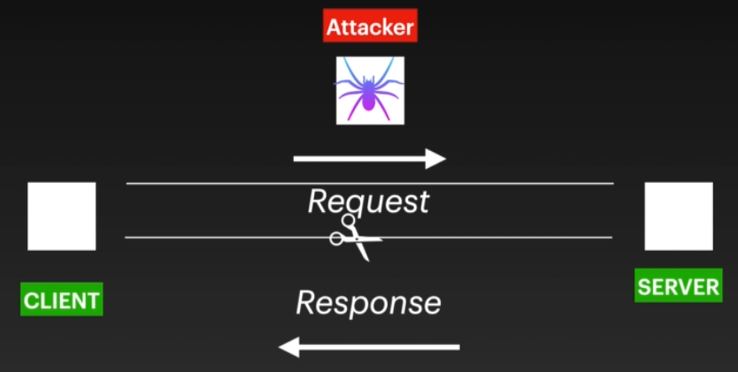

How a Auth Bypass Works
- When a client connecting to server then it sends the request(From left to right) and in return gets a response from the server.
- If the client is able to modify the response then chances of Authentication bypass increases.(Possible if the application just checking the client side code instead of checking the server side code.)
- CASE 1: OTP Bypass:
- Checking whether the OTP's are right or wrong improperly leads to bypass
- Verifying at the client side only & taking decision is dangerous.
- Only, allowing logging into application based on on true/false conditions are dangerous.
- EXAMPLE 1
- Visit the website: https://www.healthie.in/
- While Sign-Up with fake credentials you'll get OTP on your given fake mobile number.
- As you dont know the OTP activate the Burp Proxy and input any random 4 digit OTP

- It will be intersepted in Burp

- Intersept the response on this phase and forward

- Do the changes in response

- Wohoo you signedin as a new user with facke credentials

- EXAMPLE 2
- Visit site: https://www.99acres.com/NRI-Real-Estate.htm
- Do Signup with fake credentials

- Enter a random code and start BurpSuit

- Burp suit will intersept API Calls

- Do intercept the response

- Do the changes in response

- Turnoff BurpSuit and refresh the page you'll be loggedIn

- EXAMPLE 3
- Visit site: https://www.starquik.com/
- Signup and it allows 0000 as default OTP
- EXAMPLE 4
- Visit site: https://www.starquik.com/
- Signup with fake credentials

- At OTP screen put wrong OTP and Start Burp

- Burpsuit will intersept

- Do changes and intersept the response also

- Tip : When the OTP is wrong then the website immediately throws message but here we see that it showing us two to three more responses
- So we try giving input to any of the requests

- And forward it
- Wollah we have an account with fake credentials